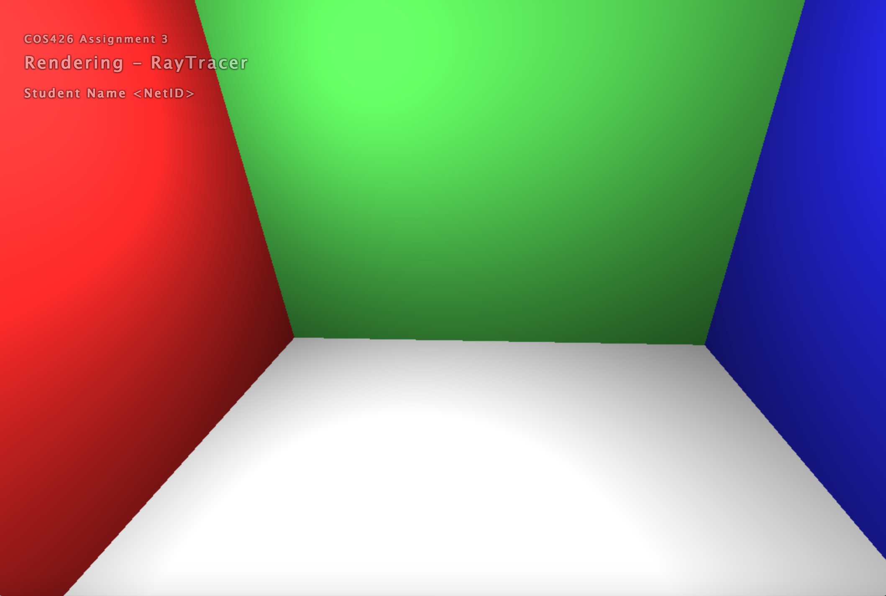
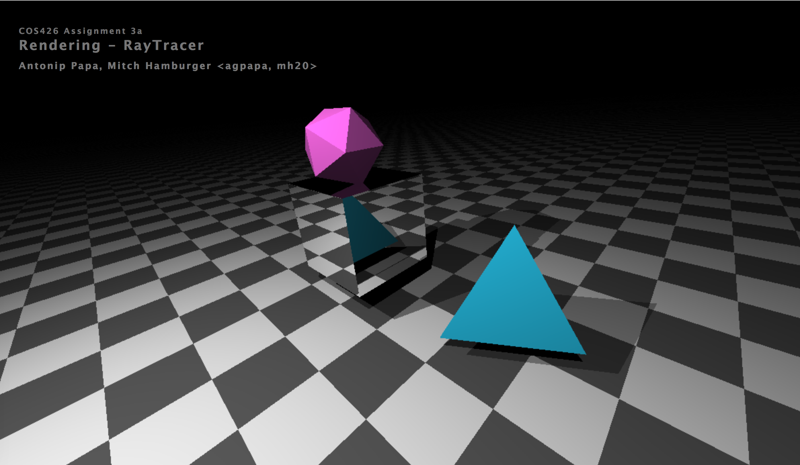
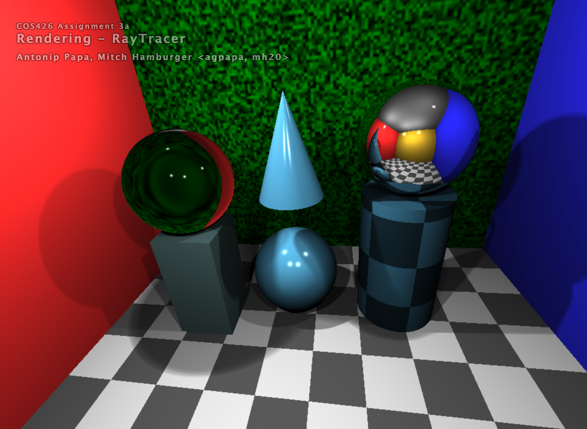

COS426 Assignment 3a Rendering Ray Tracer — Writeup
Switch to: Interactive Editor
- (0.0) Plane
- (2.0) Triangle
- (2.0) Sphere
- (2.0) Box
- (2.0) Cylinder
- (3.0) Cone
- (1.0) Shadows
- (3.0) Soft shadows
- (2.0) Transmission
- (1.0) Checkerboard
- (1.5) Phong material
- (1.5) Special material
- (1.0) Scene
Plane
This feature was implemented by the course staff. I used it as an example of how to calculate the intersection with primitives.
Here is an example output where the planes are used for cornell box :

I did not encounter any particular challenges in implementing this.
Triangle
We intersected the ray with the plane and then measured if the intersected point was inside each of the three triangle sides.
You can include as many results as you want, but please at least include the following results:
scene=mesh

Sphere
We calculated T_ca and T_hc values using the geometry described in precept, which gave us one, two, or 0 intersections. In the event of two intersections, we took the closer of the two (T_ca - T_hc).
Box
We used the already-implemented plane intersection function to test intersection with each plane in the box, and if the ray intersected the box multiple times, we returned the closer of the intersections.
Cylinder
Using an algerbraic equation given in precept, we create two possible intersect points and return the closer one.
Cone
Using an algerbraic equation given in precept, we create two possible intersect points and return the closer one.
Shadows
We casted a ray from the position given to the light source, and if the ray intersected any object, we return the color black, indicating that the position is obscured by whatever object it intersected.
Soft shadows
We casted several rays from the position given toward the light source in order to simulate the effect of an area light source. We used the algorithm provided in precept to calculate the sampling directions and sum and average the individual samples in order to ascertain the degree to which the position is obscured.
Transmission
We used the eta value given and Snell's law to calculate and return the direction of refraction.
Checkerboard
We modulated whether or not the color was dark or light based on the point coordinates.
Phong material
Brighten parts of a material based on the angle of the reflected light and the observer.
Special material
We used a random noise function (https://gist.github.com/patriciogonzalezvivo/670c22f3966e662d2f83) to generate 2d noise, which we colored black and green, to create a noise effect similar to that in the example.
scene=default

Scene
You can include as many results as you want, but please at least include the following results:
scene=myScene

myScene